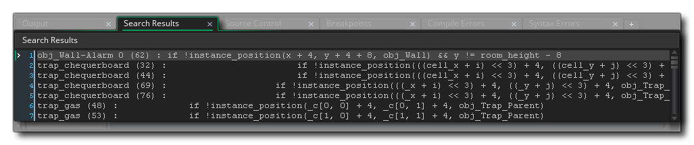
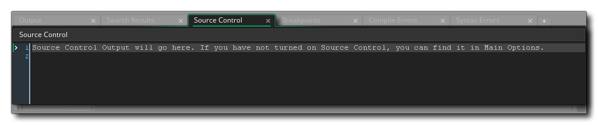

Lorsque vous ouvrez un projet dans GameMaker Studio 2 pour la première fois, la GameMaker Studio 2 sortie s'affiche en bas de l'écran. Cette fenêtre ancrée contient divers onglets qui montrent les différentes informations de sortie pour votre projet, selon certaines circonstances. Le dock peut être fermé en cliquant sur le bouton en bas de l'IDE, et vous pouvez cliquer  et faites glisser n'importe quel onglet dans la fenêtre ancrée vers un autre dock pour changer sa position, ou vous pouvez cliquer
et faites glisser n'importe quel onglet dans la fenêtre ancrée vers un autre dock pour changer sa position, ou vous pouvez cliquer  dans la barre de contenu du dock et faites-le glisser dans l'espace de travail pour créer une fenêtre autonome:
dans la barre de contenu du dock et faites-le glisser dans l'espace de travail pour créer une fenêtre autonome:

Vous pouvez aussi  et faites glisser une sortie ancrée dans une autre pour créer une fenêtre de sortie de vue éclatée, comme indiqué dans l'exemple ci-dessous où les deux sorties d'erreur ont été placées dans le même onglet (vous pouvez ralentir cliquer
et faites glisser une sortie ancrée dans une autre pour créer une fenêtre de sortie de vue éclatée, comme indiqué dans l'exemple ci-dessous où les deux sorties d'erreur ont été placées dans le même onglet (vous pouvez ralentir cliquer  sur un onglet pour changer son nom aussi):
sur un onglet pour changer son nom aussi):

Vous pouvez récupérer l'état par défaut de l'EDI à tout moment en sélectionnant Réinitialiser la mise en page dans la fenêtre Mise en page et vous pouvez rouvrir n'importe quel onglet fermé à partir du menu Fenêtre. Les onglets ancrés par défaut sont expliqués ci-dessous:
La fenêtre de sortie egénérale est l'endroit où toute la sortie du compilateur est affichée, ainsi que tous les messages que vous avez ajoutés à votre jeu en utilisant le show_debug_message fonction. La plupart des informations initiales affichées sont simplement des informations de débogage sur la façon dont le jeu est construit et en tant que telles peuvent généralement être ignorées. Toutefois, si vous rencontrez un problème lors de la construction de votre projet pour une plate-forme cible, cela peut s'avérer utile pour trouver la cause et fournir des informations pour le support si vous les contactez. Notez que vous pouvez modifier la quantité d'informations affichées ici dans la section Compilation des Préférences.

Vous pouvez ouvrir la fenêtre Rechercher et remplacer à l'aide du raccourci clavier
/
+
+ " F », ou allez dans le menu Édition Une fois que vous avez entré vos termes de recherche, les résultats seront affichés dans cette fenêtre avec le format suivant:
[object] - [event] - [Line Number]: [search string]
Si le terme de recherche est trouvé dans un script, il sera simplement:
[script] - [Line Number]: [search string]
Vous pouvez ensuite double-cliquer
sur l'une des entrées retournées pour ouvrir l'actif donné à la position correcte pour l'édition.

Cette fenêtre affichera toutes les sorties pour votre plugin SCM. Vous pouvez en savoir plus sur la configuration du contrôle de la source ici.
Les points d'arrêt sont des endroits dans votre code de jeu ou DnD™ où vous avez demandé à GameMaker Studio 2 de mettre en pause l'exécution du projet en mode de débogage. Vous pouvez ajouter un point d'arrêt n'importe où dans la boucle de jeu en utilisant la touche " F9 ", et quand vous le faites apparaîtra dans cet onglet de sortie Vous pouvez les activer et les désactiver (sans les supprimer) en cliquant sur la case à cocher à gauche et si vous utilisez le bouton droit de la souris
Sur l'un d'eux, vous obtenez un petit menu qui vous permet de supprimer le point d'arrêt ou d'ouvrir la fenêtre de code / DnD™ où se trouve le point d'arrêt.
Il y a des moments où votre jeu rencontrera un type d'erreur que le vérificateur de syntaxe n'a peut-être pas pu détecter ou qui est lié à la façon dont vous avez configuré les options de compilation. Lorsque cela se produit, votre jeu vous montrera une erreur de syntaxe ou une erreur de compilation (ou les deux) et arrêtera de fonctionner. Toutes les erreurs du compilateur seront également affichées dans la fenêtre General Output, mais elles seront également listées ici séparément (puisqu'elles peuvent être "perdues" dans le reste de la sortie générale), et les erreurs de syntaxe seront mises à jour lorsque vous écrivez votre code (note qu'il y aura une courte pause entre la saisie de quelque chose et toute erreur apparaissant dans cette fenêtre pour éviter que des erreurs ne soient signalées pour le code inachevé).
Les messages d'erreur du compilateur suivront tous le même format:
[object] - [event] - [Line Number]: [error string]
Si le terme de recherche est trouvé dans un script, il sera simplement:
[script] - [Line Number]: [error string]
Vous pouvez ensuite double-cliquer